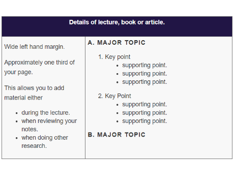

Linear Notes
Taking notes in a linear or sequential fashion is probably the most common way of laying out your notes. A wide left-hand margin is used so that you can add material to your notes at a later date.